By day you build. By night you bleed.
One bloodline · one keep · a five-biome island under siege
Every day buys you the night. Gather, build and grow stronger while the sun holds — then the bell rings, and the horde comes for your walls.
Loot chests, mine ore and fell timber. Raise walls and towers, recruit townsfolk, take on quests, and spend hard-won gold at the War Table.
Ring the war bell and brace. Orks pour from every biome toward the keep — grunts, scouts, berserkers and warp-casting shamans. Survive until dawn.
“This island was quiet once. Forest, snow, a little wind. Nothing out here but the wolves…”
Forged in Rust · one island, wall to wall
Not just a defense game — a whole island that works, fights and grows around you. Every shot below is captured in-engine, on Ultra.
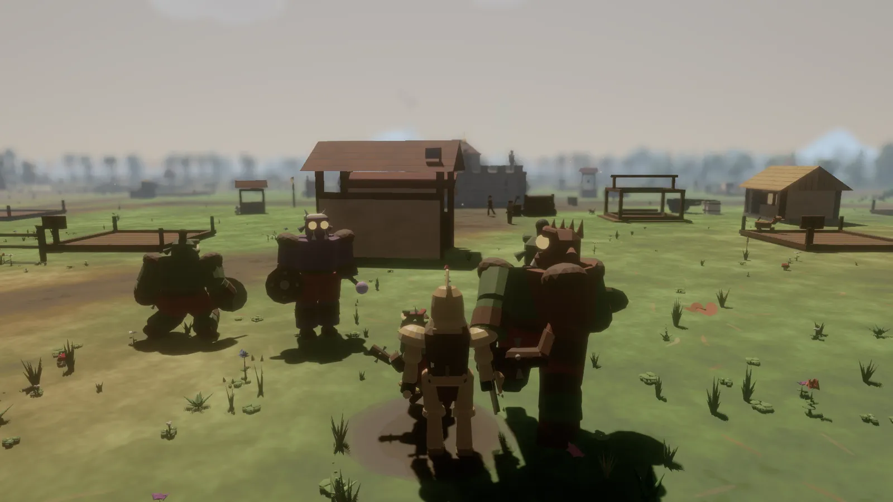
01In-engine · UltraSoft-lock the nearest threat, then swing, crit and block on a stamina budget — or hold to charge a guaranteed-crit heavy smash. Four ork breeds, each with its own brain and bite.
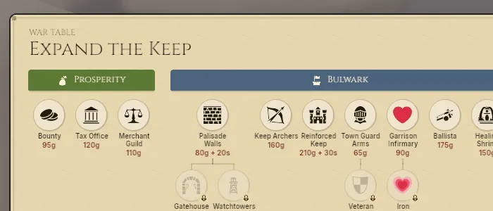
02In-engine · UltraA branching upgrade tree — blade, armor, abilities, walls and defenses. Climb the Prosperity, Bulwark, Champion and Armoury lines night after night, and carry every unlock down the bloodline.
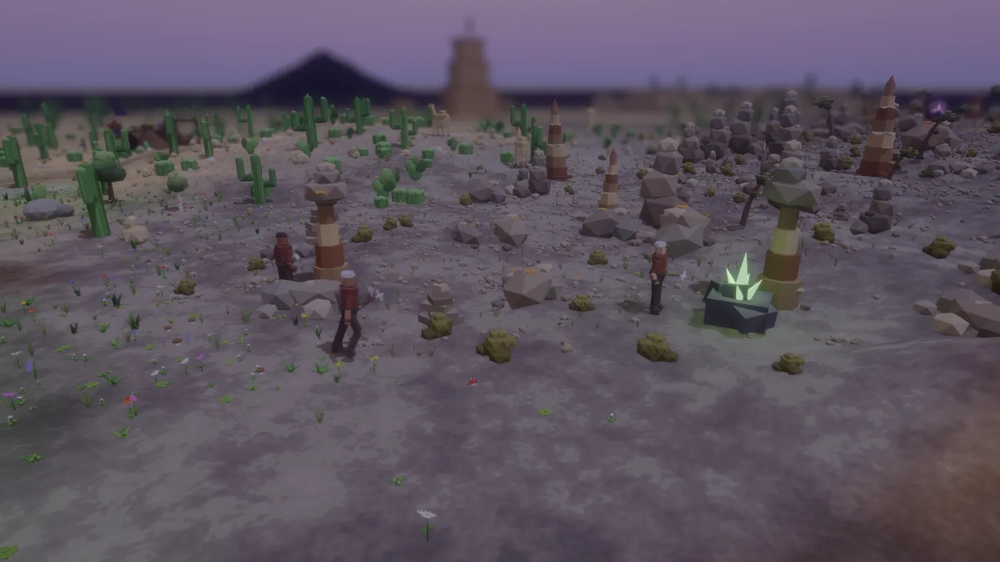
03In-engine · UltraWoodcutters fell real trees; miners chip real boulders and cart the stone home. Lay out plots, raise houses and workshops, recruit and feed townsfolk — a town with its own food, repair and burn.
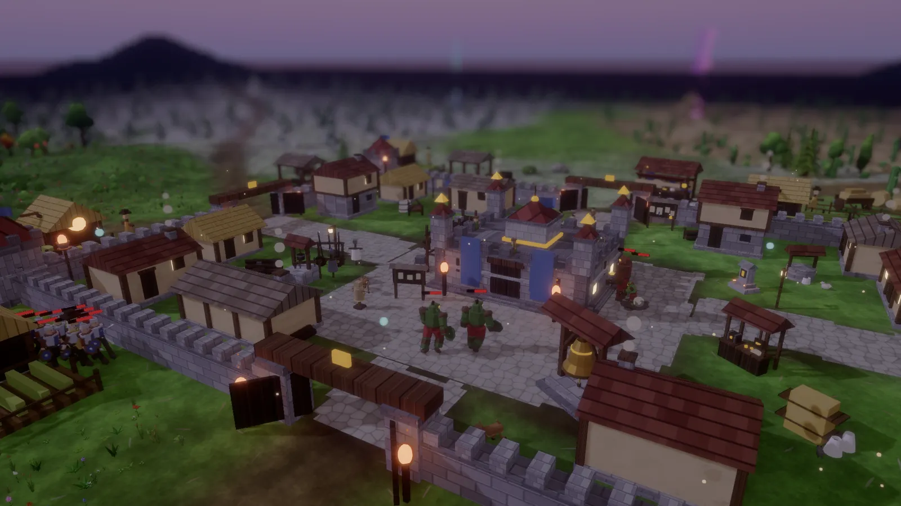
04In-engine · UltraWhen the war bell tolls, grunts, scouts, berserkers and warp-casting shamans pour from every biome toward the keep. Man the towers, ballistae and shrines, repair the breaches, and survive until dawn.
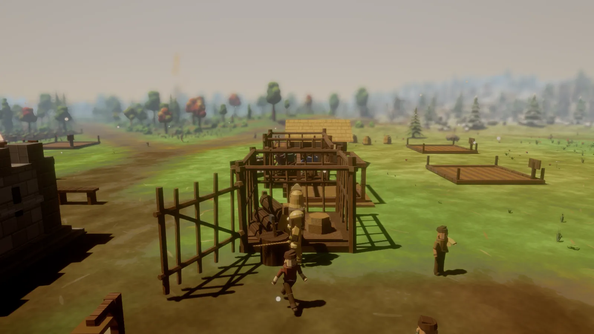
05In-engine · UltraThe horde pens captives like cattle across the island. Clear the warband, smash the cage, and the freed take up arms at your side — every rescue another sword on the wall come nightfall.
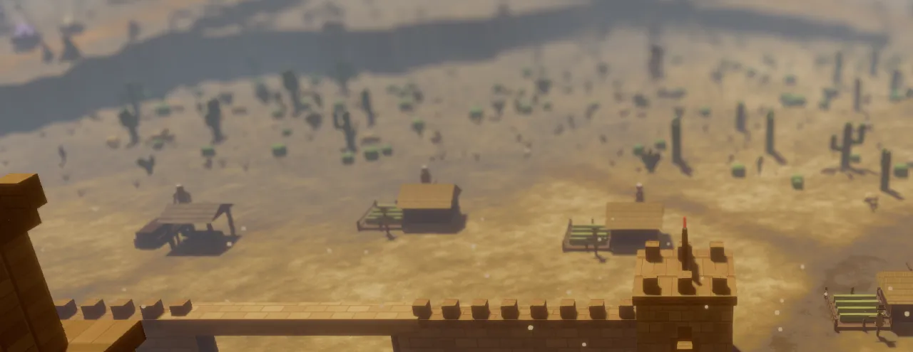
06In-engine · UltraA Stronghold-Crusader-style human opponent holds a walled fort out in the desert — running its own tax economy, raising buildings and patrolling as it grows. Rush it early, or let it fester into a second front.
— and there's more on the island —
Forest, snow, desert, rock and swamp on one island, laced with curving roads — each with its own camp, wildlife and weather.
An ork fortress beyond the swamp feeds the waves — the Blight, patrols and towers that fire on sight. Breach it and end the Warlord to win.
When the hero falls, the next heir takes up the sword with every upgrade intact. Your townsfolk are your lives.
A step-by-step quest chain eases you in — where to gather, when to build, how the trials work — so your first night doesn't blindside you.
Loot chests, forage, and stock food and potions into quick-slots for the fight — eat to heal, quaff to buff.
Tap V to drop into a first-person viewmodel — sword and shield in hand — and take the wall eye-to-eye with the horde.
You are not one knight.
You are a line — and the blade does not fall when you do.
When the hero falls, the next heir takes up the sword with every upgrade intact. Your townsfolk are your lives. Lose the keep, or lose the last of the bloodline — only then is it over.
The keep sits at the heart. The horde holds the edges. Click any land to see it full-size.
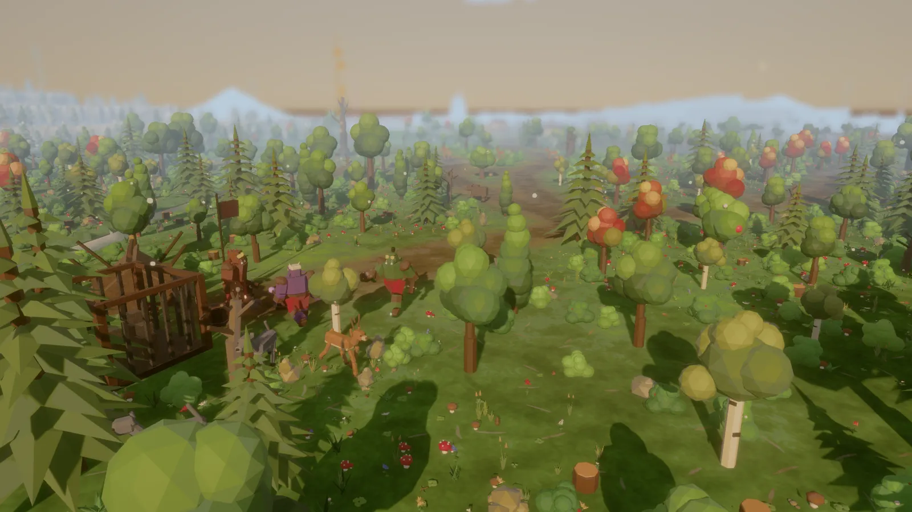
Forest — river-cut woodland, the keep's home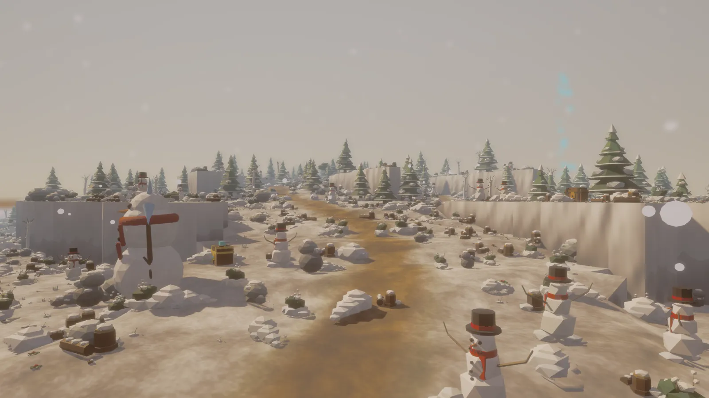
Snow — frozen pinewood & ambush snowmen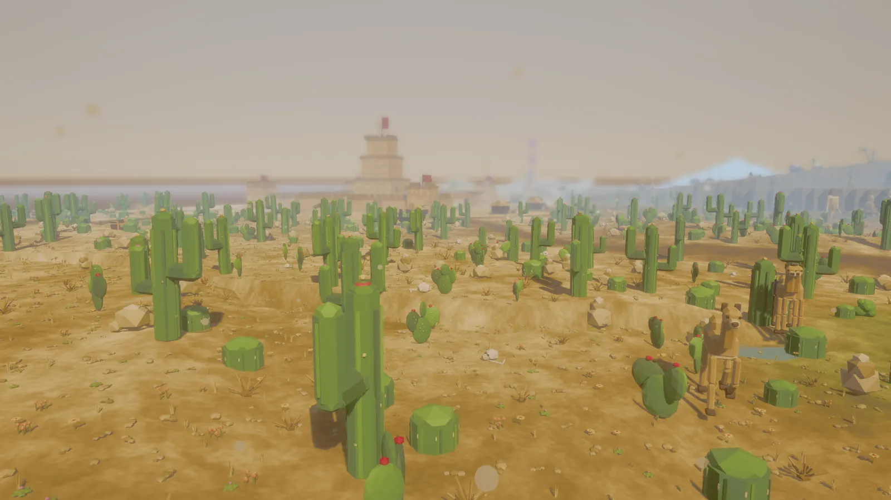
Desert — cactus flats & the rival fort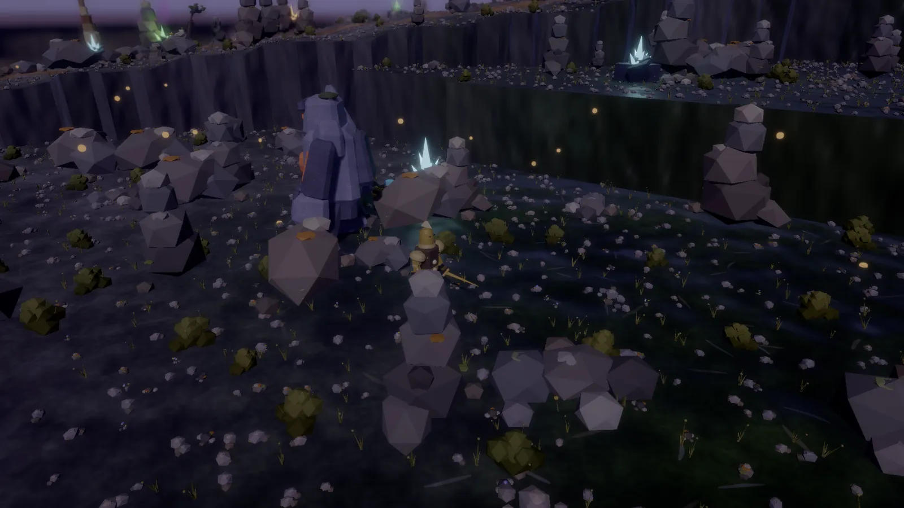
Rock — crystal crags & sheer cliffs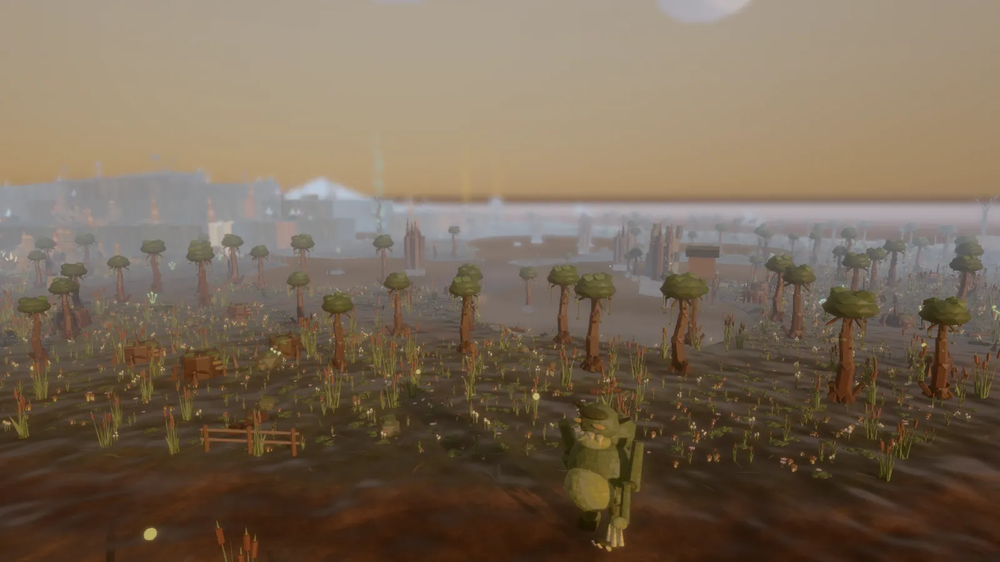
Swamp — the drowned mire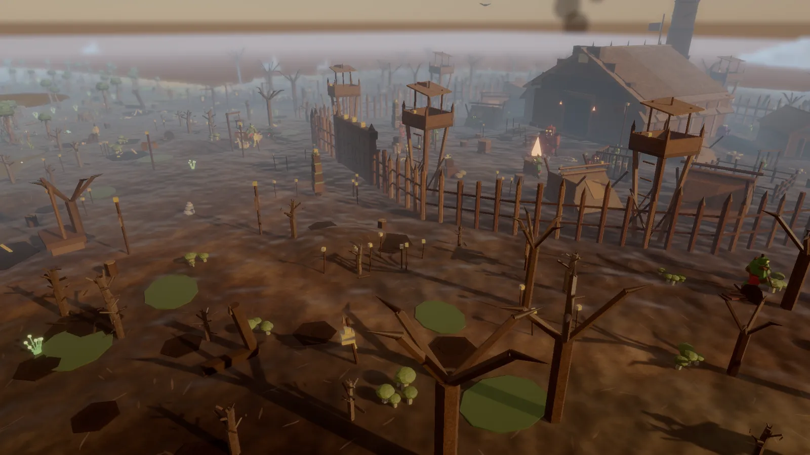
Gnashfang Hold — the ork fortress & the BlightDrag the slider — same ground, before and after a few nights of fortifying.
The keep — bare ground vs. fully walled
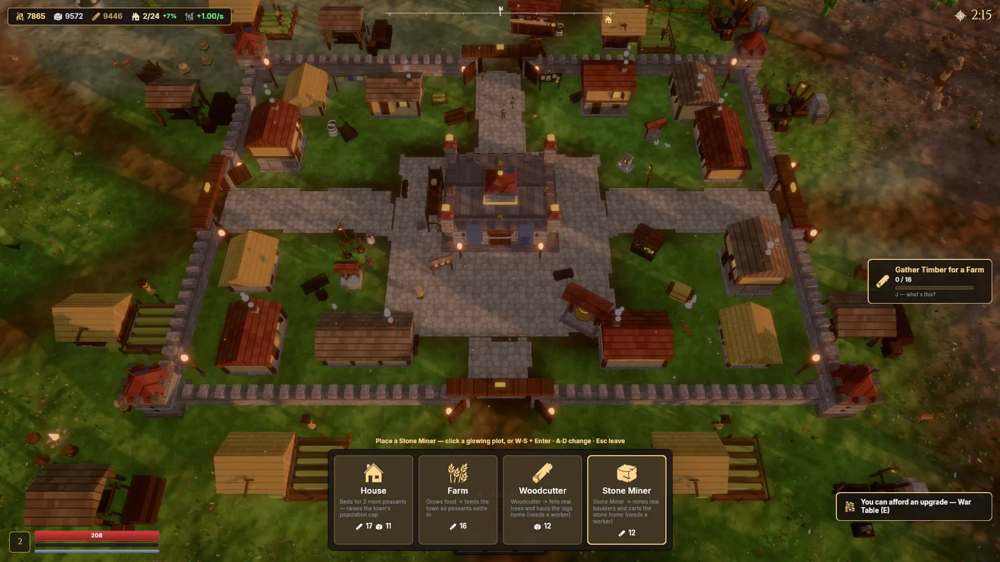
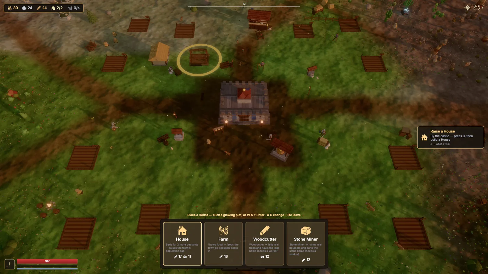
Runs on modest hardware — the low-poly art keeps it light while the sieges stay busy.
Free, no strings, ~56 MB. Take the wall before nightfall.
Download for Windows · freeLatest release on the changelog · also on itch.io
{kind=link}
{kind=link}
{kind=link}
{kind=link}
{kind=link}
{kind=link}
{kind=link}
{kind=link}
{kind=link}
{kind=link}
{kind=link}
{kind=link}
{kind=link}
{kind=link}
{kind=link}